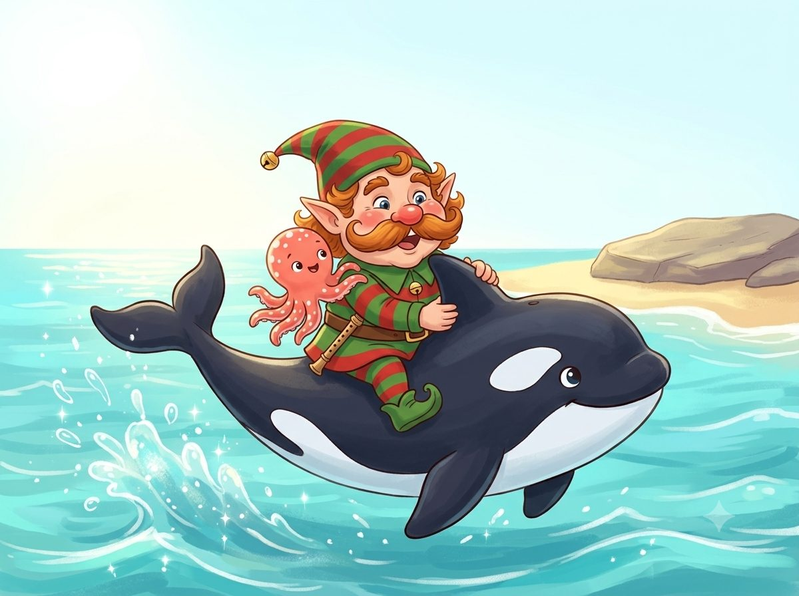
Mese egy bátor manóról és egy nagy tengeri kalandról
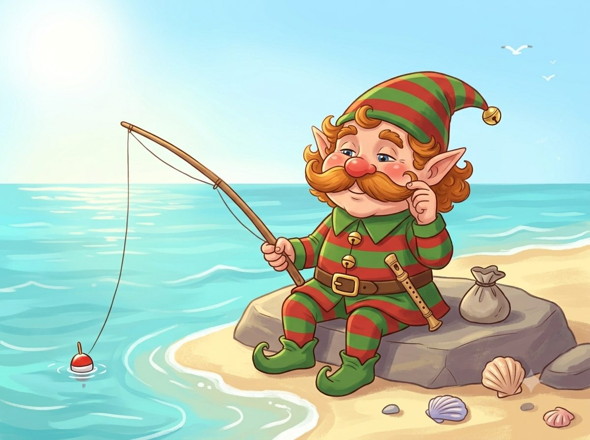
Réges-régen, amikor Bajusz Bandi még csak háromszáz éves volt – ami egy manónál egészen fiatalnak számít –, egyszer elutazott a tengerpartra horgászni.
Leült egy meleg, lapos sziklára, bedobta a horgot, és hunyorogva élvezte a napsütést. – Ennél jobb nap nem is lehetne! – mondta, és elégedetten megpödörte a bajuszát.
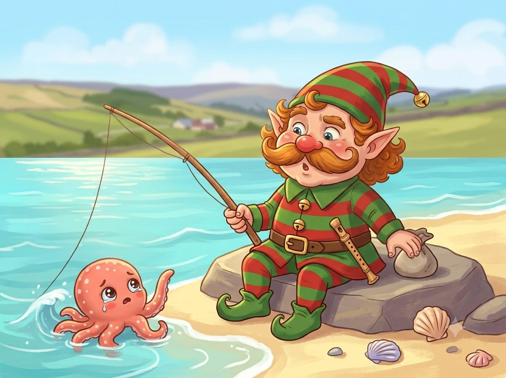
Egyszer csak megmozdult a víz a szikla mellett. Egy icipici, rózsaszín, pöttyös polip dugta ki a fejét a hullámokból. A szemei tele voltak könnyel.
– Kérlek, segíts! – szipogta. – Pötyi vagyok. Az anyukámat elvitte egy nagy, szürke cápa!
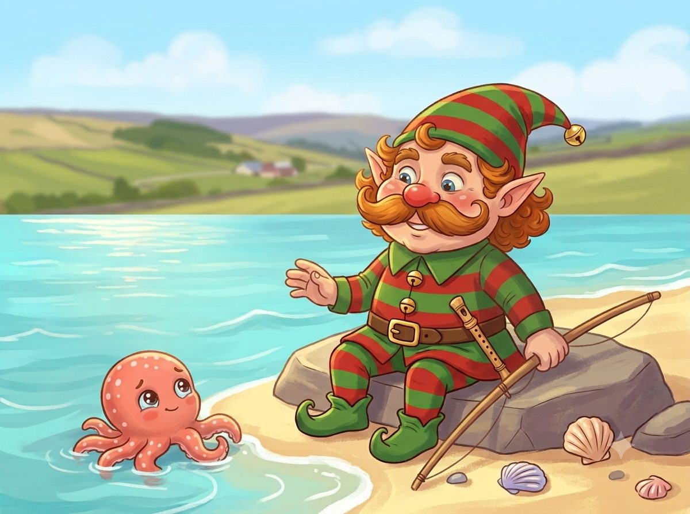
Bandi letette a horgászbotot, és kedvesen a kis polip felé hajolt. – Ne sírj, Pötyi. Megkeressük az anyukádat, és hazahozzuk. Ígérem!
De hogyan jut le egy manó a tenger mélyére? Bandi gondolkodott egy kicsit, aztán elővette a fa furulyáját az övéből.
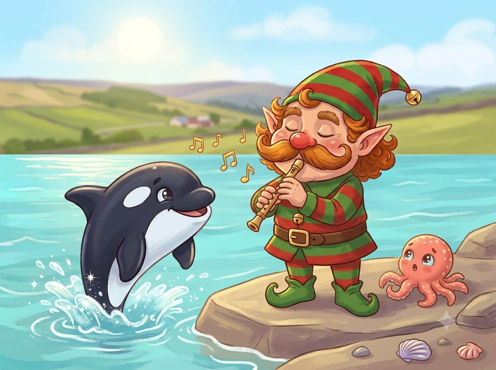
Bandi belefújt a furulyába, és egy vidám, csilingelő dallamot játszott a hullámoknak. Nem sokkal később a vízből kiugrott egy fekete-fehér kardszárnyú delfin: Csobi, Bandi régi barátja.
– Hívtál, Bandi? – kérdezte. – Hívtalak! – felelte Bandi. – Le kell merülnünk a tenger fenekére!
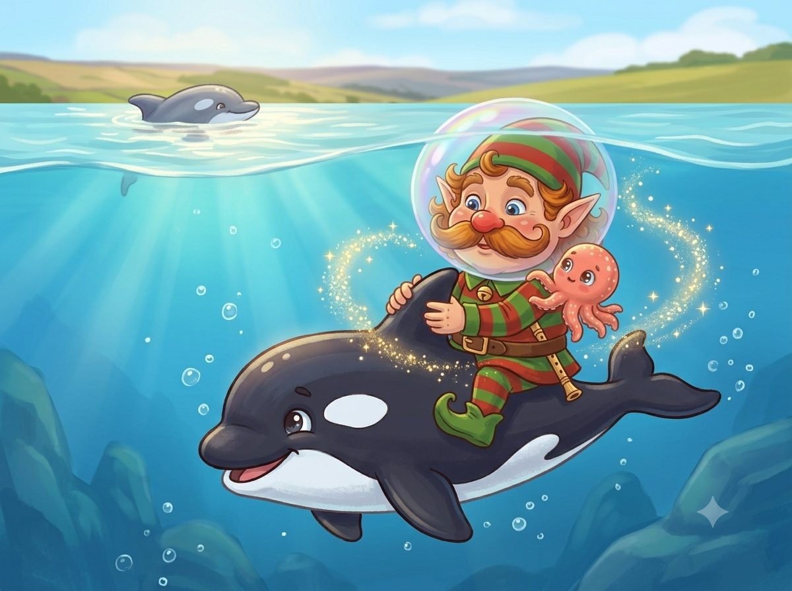
Bandi elővett egy csipetnyi varázsport, és a feje fölé szórta. Blublublu! – egy csillogó levegőbuborék nőtt a feje köré, mint egy üveg sisak.
Felült Csobi hátára, Pötyi a vállába kapaszkodott, és hopp! – lemerültek a kék víz alá.
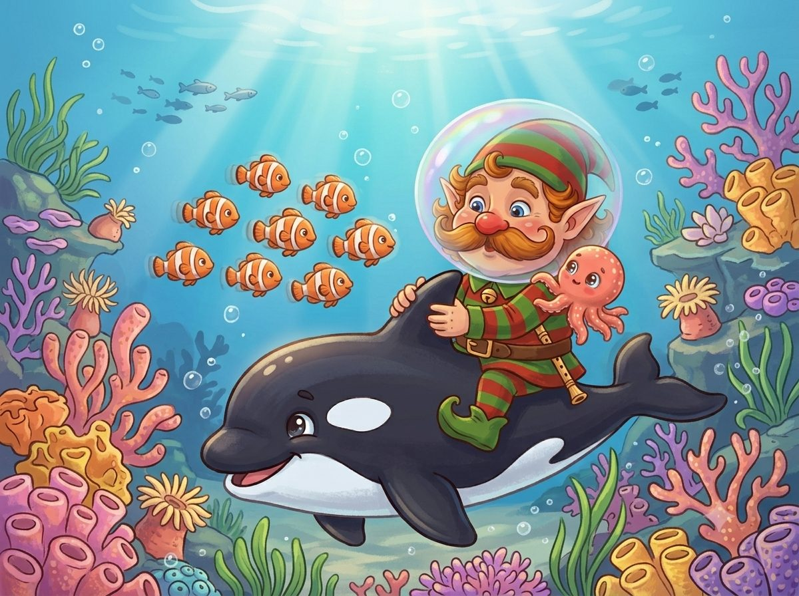
A tenger alján színes korallok nőttek, akár egy tündérkert. Egy csapat csíkos kishal úszott el mellettük.
– Láttatok egy szürke cápát, aki egy polipanyukát vitt? – kérdezte Bandi. A kishalak csak a fejüket rázták, és elúsztak.
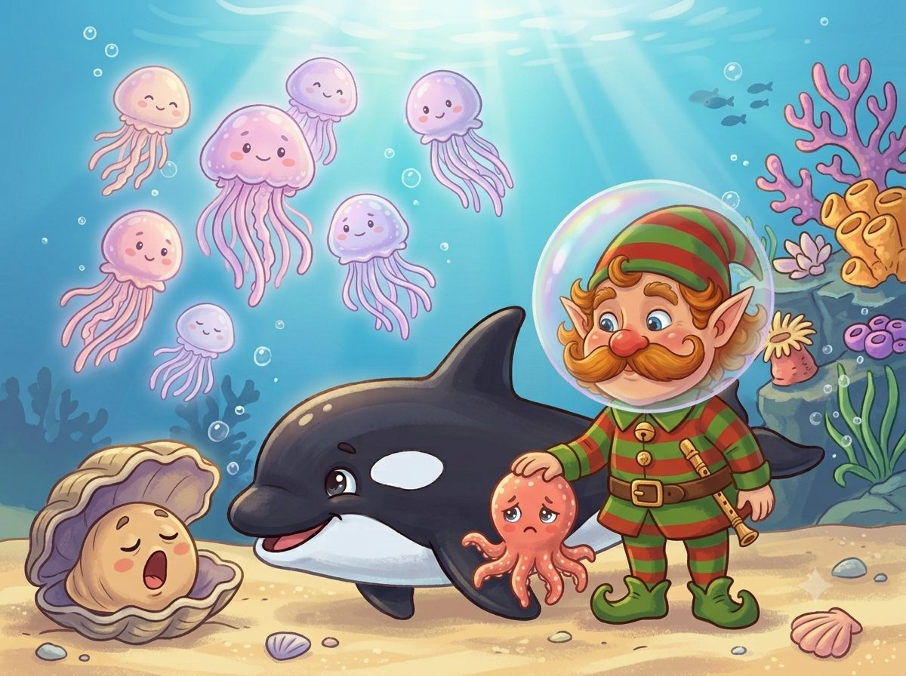
Megkérdeztek egy öreg kagylót is, de az csak ásított egyet, és becsukta a héját. A lebegő medúzák is csak táncoltak a vízben. – Nem láttunk semmit – suttogták.
Pötyi elszomorodott. – Soha nem találjuk meg anyát… – Dehogynem – mondta Bandi. – Egy igazi manó sosem adja fel!
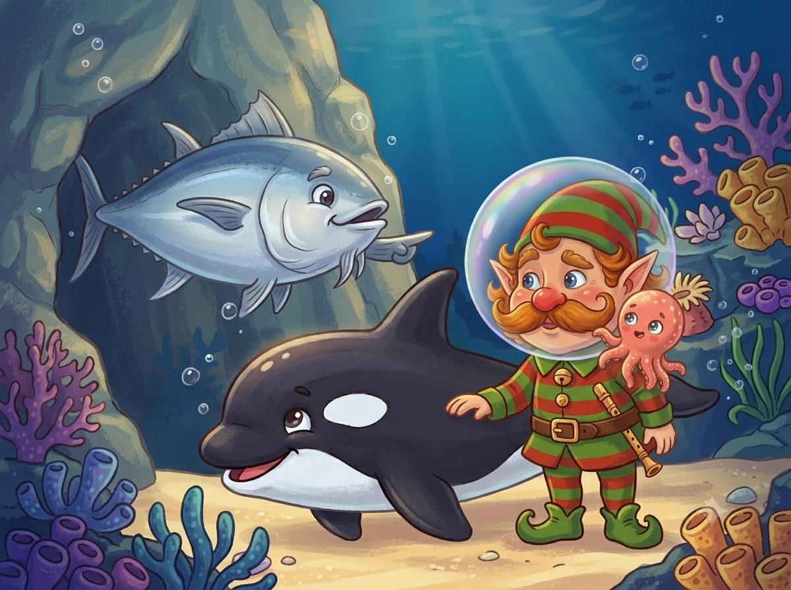
Ekkor egy nagy, ezüstkék tonhal úszott elő egy szikla mögül. – Szürke cápát kerestek? – kérdezte. – Ismerem. A régi hajóroncsnál lakik, arra, ahol a víz a legmélyebb. Oda viszi mindig a zsákmányait.
– Köszönjük! – kiáltották, és Csobi már suhant is.
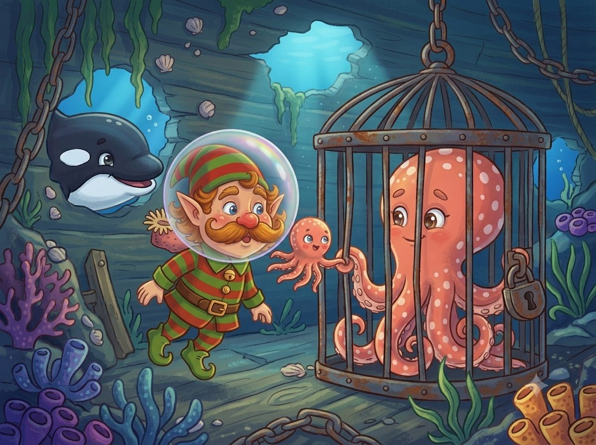
A mélyben ott feküdt egy régi, moszatos hajó. A cápa sehol sem volt. Bent, a hajó gyomrában, egy rozsdás vasketrecben ott ült Pötyi anyukája!
– Anya! – kiáltotta Pötyi. – Kicsikém! – nyújtotta felé a karjait az anyukája a rácsok között.
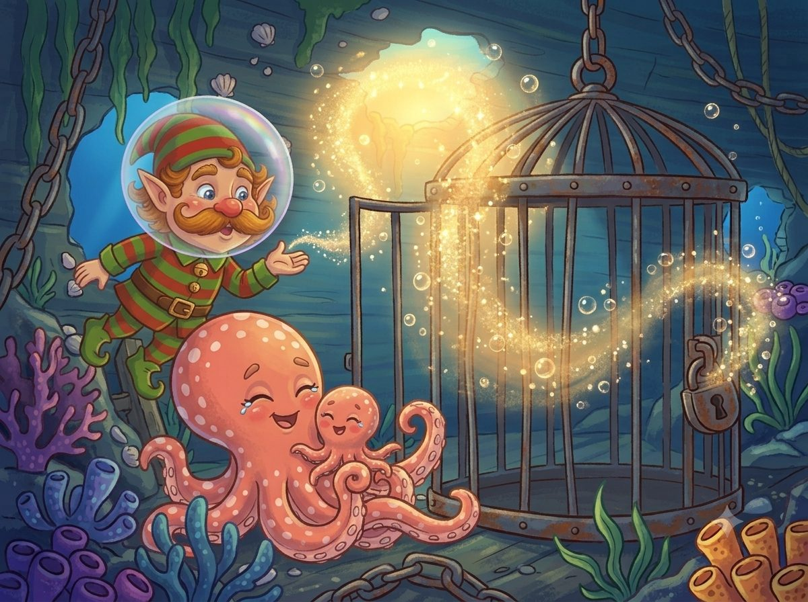
A ketrecen hatalmas, rozsdás lakat lógott. Bandi megpödörte a bajuszát, aztán egy marék varázsport fújt rá. Blublublu! – a lakat pattant egyet, és a ketrec ajtaja kinyílt.
Pötyi és az anyukája szorosan átölelték egymást mind a tizenhat karjukkal.
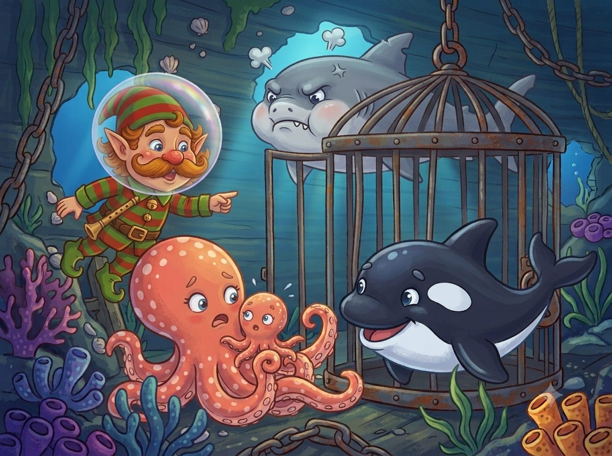
Ekkor a hajó mögül egy nagy, szürke árnyék úszott elő. A cápa volt az – és nagyon, nagyon mérges volt!
– Ki merte kinyitni a ketrecemet?! – dörmögte. – Gyorsan, mindenki Csobira! – kiáltotta Bandi.
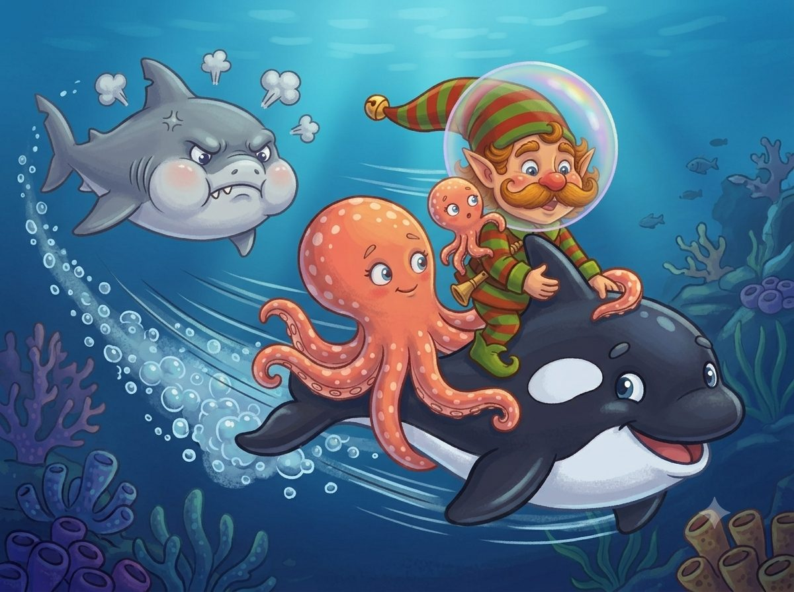
Bandi, Pötyi és az anyukája felpattantak Csobi hátára, és Csobi úszni kezdett, amilyen gyorsan csak tudott. A cápa utánuk!
Egyre közelebb és közelebb ért… Bandi a sapkáját szorította, a csengője csak úgy csilingelt.
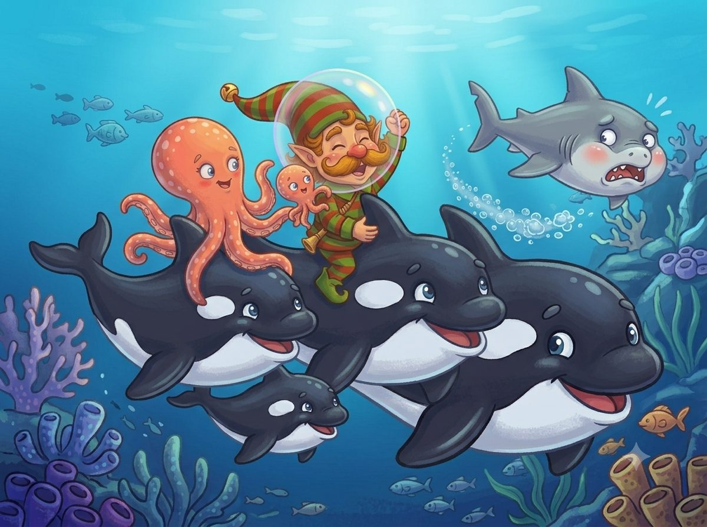
Amikor a cápa már majdnem utolérte őket, a kék vízből egyszerre előúszott Csobi egész családja: az anyukája, az apukája és a testvérei!
A cápa meglátta a sok nagy kardszárnyút, megijedt, sarkon fordult, és elúszott – soha többé nem jött vissza arra.
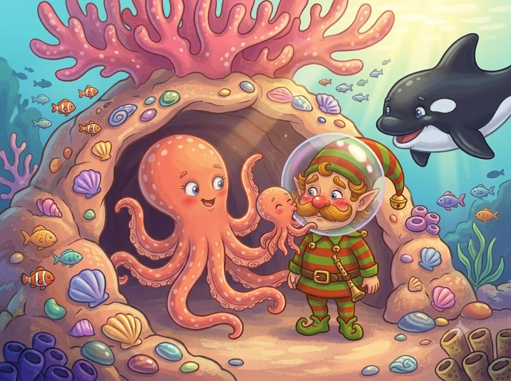
Csobi hazavitte a polipokat a zátonyon lévő kis kuckójukba, egy rózsaszín korall alá. – Köszönjük, Bandi! – mondta Pötyi anyukája, és Pötyi egy nagy, tapadókorongos puszit nyomott Bandi arcára.
Bandi úgy elpirult, hogy az orra még pirosabb lett.
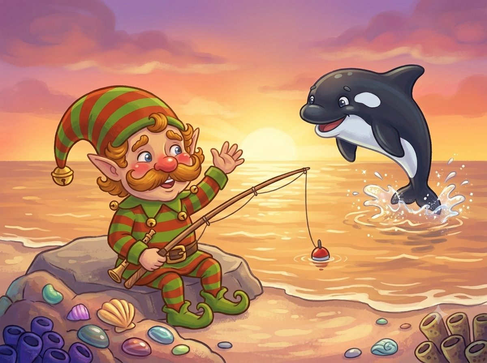
Csobi visszavitte Bandit a partra, a meleg, lapos sziklához. – Köszönöm, barátom! – intett neki Bandi, és Csobi vidáman kiugrott a vízből.
Bandi újra bedobta a horgot, és mosolyogva nézte a naplementét. Aznap nem fogott halat, de a szíve tele volt örömmel.
Vége